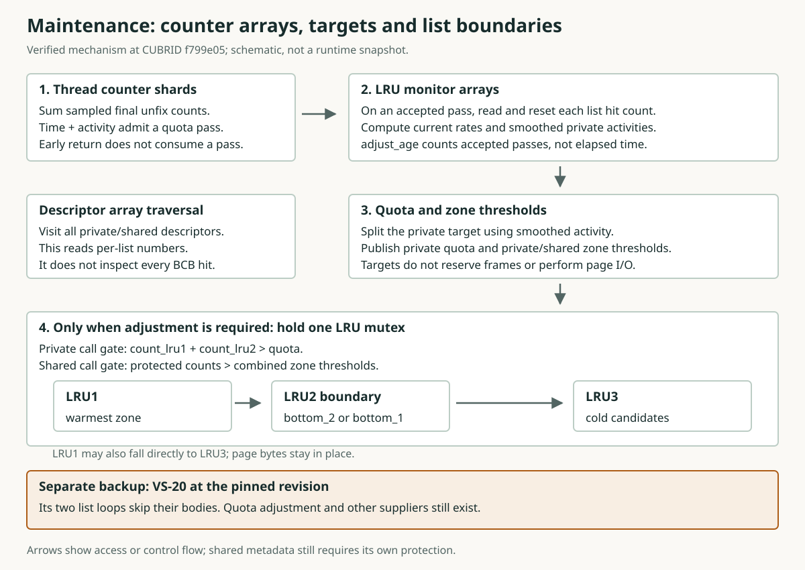

같은 페이지를 다시 읽는데, 왜 디스크에서 또 가져올까?
페이지는 데이터베이스 데이터를 나누어 담는 단위입니다. 프레임은 페이지 하나를 담을 수 있는 메모리 칸입니다. 버퍼 풀은 이런 칸들을 모아 둔 공간입니다.
설명을 위해 프레임이 12개인 버퍼 풀을 생각해 봅시다. 모든 칸에 이미 페이지가 들어 있습니다. 한 요청은 같은 네 페이지를 반복해서 읽습니다. 동시에 큰 스캔은 다른 페이지들을 차례로 읽습니다.
스캔이 다음 페이지를 가져오려면, 이미 들어 있는 페이지 하나의 자리를 사용할 수 있어야 합니다. 이때 반복 조회가 곧 다시 읽을 페이지를 내보내면, 그 조회는 디스크에서 같은 페이지를 다시 가져와야 합니다.
그래서 가득 찬 풀에서는 어떤 페이지를 더 오래 남길지 결정해야 합니다. 스캔도 계속 진행할 공간이 필요합니다.
처음 정한 보존 목표를 계속 사용해도 될까?
페이지를 담는 메모리 칸인 프레임 12개가 모두 찬 앞의 예제를 계속 보겠습니다. 처음에는 반복 조회가 네 페이지만 사용했습니다. 그런데 작업이 바뀌어, 이제 여덟 페이지를 돌아가며 읽습니다. 스캔도 계속 실행됩니다.
| 상황 | 반복 조회에 필요한 페이지 수 | 풀의 용량 |
|---|---|---|
| 작업이 바뀌기 전 | 4 | 12개 프레임 |
| 작업이 바뀐 뒤 | 8 | 12개 프레임 |
처음 정한 보존 목표를 그대로 유지하면, 달라진 작업을 반영하지 못합니다. 반대로 어떤 작업의 활동이 줄었는데도 이전 목표를 유지하면, 그 목표 역시 현재 상황에 맞지 않을 수 있습니다. 시작할 때 목표를 한 번 정하는 것으로 끝내지 않고 실행 중 다시 검토해야 하는 이유입니다.
Maintenance는 관찰한 활동으로 이 목표를 다시 검토합니다. 앞으로 어떤 페이지를 읽을지 아는 것은 아니며, 여덟 페이지를 모두 메모리에 남긴다고 보장하지도 않습니다.
quota는 무엇의 목표일까?
CUBRID는 메모리에 있는 페이지를 교체 목록으로 묶어 관리합니다. 목록은 각 페이지가 교체 정책에서 어떤 위치에 있는지 기록합니다. 메모리 칸을 따로 떼어 놓은 공간은 아닙니다.
private 목록은 세션과 연결되는 목록이며, 여러 세션이 같은 목록을 사용할 수도 있습니다. shared 목록은 공통으로 보존량을 계산하는 목록입니다. 둘 다 같은 버퍼 풀 안에 있습니다. private가 다른 요청의 페이지 접근을 막는다는 뜻은 아니며, shared가 스캔 페이지를 뜻하는 것도 아닙니다.
quota는 private 목록에 얼마나 많은 페이지를 남기려 할지 나타내는 목표입니다. 그만큼의 칸을 예약하거나, 목록의 페이지 수를 반드시 그 이하로 제한하는 값은 아닙니다. shared 목록에도 영역의 크기를 정하는 계산된 목표가 있습니다.
Maintenance는 활동 표본으로 private LRU의 quota와 private/shared LRU의 영역별 크기 기준을 다시 계산합니다. 버퍼 풀의 전체 프레임 수는 그대로입니다. 영역은 목록 안에서 보존 역할을 나누는 부분입니다. 조정 조건을 만족하면 초과한 항목이 교체 후보 쪽으로 내려갈 수 있습니다.
maintenance는 어떤 활동을 관찰할까?
교체 목록은 메모리의 페이지를 보존 정책에 따라 묶고, quota는 그 목록의 보존 목표를 나타냅니다. Maintenance가 목표를 바꾸려면 활동에 관한 정보가 필요합니다. 호출자가 페이지 사용을 마치는 경로에서 대략적인 표본을 수집합니다.
fix는 호출자가 페이지를 사용하는 동안 그 프레임이 재사용되지 않도록 보호합니다. final unfix는 페이지에 남은 마지막 fix를 해제합니다. 일부 final-unfix 경로에서는 서로 다른 두 종류의 정보를 집계합니다.
| 표본 | 판단에 사용하는 질문 |
|---|---|
| thread별로 집계한 final unfix 수 | 다시 갱신을 검토할 만큼 활동이 쌓였는가? |
| 목록별로 조건을 만족한 hit 표본 | 관찰한 활동을 각 목록의 보존 목표에 어떻게 반영할까? |
BCB는 프레임 하나의 제어 레코드입니다. 목록 hit를 집계할 때는 일반적으로 같은 갱신 기간 안에서 두 번째 기여를 억제합니다. 따라서 메모리에 있는 페이지 하나를 반복해서 읽는 것은 모든 읽기 횟수를 세는 것과 다릅니다.
활동 표본은 어떻게 교체 정책에 반영될까?
Maintenance daemon은 백그라운드 thread입니다. 서버 시작 과정의 작업 허용 게이트가 열리면 quota 조정 함수를 호출합니다. quota는 목록의 보존 목표이고, 영역별 크기 기준은 목록 안의 각 영역에 남길 크기를 나타냅니다.
- 이번 호출이 새 표본을 소비해도 되는지 확인합니다.
- 조건을 통과하면 활동 표본을 읽어 quota와 영역별 크기 기준을 다시 계산합니다.
- 각 목록에 영역 조정이 필요한지 확인합니다. 필요하면 목록 변경을 보호하는 잠금인 mutex를 잡고 조정합니다.
pgbuf_page_maintenance_execute
→ pgbuf_adjust_quotas
→ pgbuf_lru_adjust_zonesQuota 조정 함수는 메타데이터를 바꿉니다. 페이지 바이트를 복사하거나 선행 기록 로그를 강제로 저장하지 않으며, 페이지 I/O도 수행하지 않습니다. 영역 조정 중에는 보호된 검사로 대기 요청에 프레임을 직접 제안할 수도 있습니다. 다음 화면에서 목표 변경과 프레임 제안을 구분하겠습니다.
Q&A · maintenance가 페이지를 cold zone으로 옮길 때 페이지도 쓰나요?
quota 조정은 list 메타데이터와 보존 선호를 바꿉니다. 페이지 바이트를 복사하거나 페이지 I/O를 수행하지 않습니다. 더 cold한 페이지에도 필요한 보존 작업과 보호된 재사용 검사가 남습니다.
adjust_age는 허용된 표본 갱신 회차를 세는 값이며 경과 시간이 아닙니다. 그림은 통계 읽기와 목록 경계 조정을 나눕니다. VS-20은 고정 리비전에서 본문을 건너뛰는 별도 보조 루프에 관한 불확실성 기록입니다. quota 조정은 페이지 I/O를 하지 않습니다.

보존 목표가 줄면 무엇이 달라질까?
quota는 private 목록의 보존 목표입니다. 목록의 페이지는 세 영역에 놓입니다. LRU1은 오래 남겨 두는 쪽이고, LRU2는 중간 영역이며, LRU3는 교체 후보를 공급합니다. 메모리 풀 세 개가 아니라 한 목록 안의 위치를 나눈 것입니다.
새 표본으로 더 작은 quota를 계산했다고 합시다. Maintenance는 새 목표와 더 작은 영역별 크기 기준을 반영합니다. private 목록에서는 LRU1과 LRU2의 페이지 수를 합친 값이 새 quota를 넘을 때만 영역 조정 함수를 호출합니다. shared 목록은 별도로 영역 크기 기준을 검사합니다.
| 단계 | 달라지는 것 |
|---|---|
| 새 목표 반영 | quota와 영역별 크기 기준이 바뀝니다. 값을 저장하는 것만으로 페이지가 제거되지는 않습니다. |
| 조건을 통과한 영역 조정 | 목록 mutex를 잡고 초과한 항목을 LRU3 쪽으로 내립니다. 직접 제안에 성공하지 않았다면 이 항목들은 계속 메모리에 있습니다. |
| 후보 공급 목록 등록 | quota를 넘고 조건을 만족하는 후보가 있는 private 목록을 교체 후보 탐색에 등록할 수 있습니다. |
이렇게 정책이 해당 목록에서 교체 후보를 찾도록 유도할 수 있습니다. quota를 줄이는 것만으로 빈 프레임이 생긴 것은 아닙니다. 항목을 내리는 중 직접 제안을 시도할 수도 있지만, 그 안전성 검사는 quota 계산과 별개입니다.
책장 하나에 “오래 남길 책”, “중간”, “교체를 검토할 책”이라는 표시를 붙였다고 생각해 봅시다. 표시를 바꾸어도 책 내용은 지워지지 않습니다. 코드에서는 먼저 앞 두 영역의 합계를 줄여 LRU3 쪽으로 보내고, 그다음 LRU1 크기를 맞추려고 LRU2로 내립니다. 따라서 LRU1에서 LRU3으로 바로 내려가는 경우도 있습니다.
private/shared의 정확한 조건과 이동 순서
count_lru1, count_lru2, count_lru3는 각 영역에 현재 들어 있는 항목 수입니다. threshold_lru1과 threshold_lru2는 목표 개수입니다. bottom_1과 bottom_2는 하나의 연결 목록에서 각 영역의 차가운 끝을 가리킵니다. prev_BCB를 따라가면 더 따뜻한 쪽의 항목으로 이동합니다.
// The quota path calls with min_one = false.
private: count_lru1 + count_lru2 > quota;
shared: count_lru1 + count_lru2
> threshold_lru1 + threshold_lru2;
// Control-flow sketch, while holding the list mutex:
if (count_lru1 + count_lru2 > threshold_lru1 + threshold_lru2) {
cursor = bottom_2 != NULL ? bottom_2 : bottom_1;
while (count_lru1 + count_lru2 > threshold_lru1 + threshold_lru2) {
saved_prev = cursor->prev_BCB;
pgbuf_lru_fall_bcb_to_zone_3(thread_p, cursor, lru_list);
cursor = saved_prev;
}
repair bottom_1 / bottom_2 using cursor and surviving counts;
}
pgbuf_lru_adjust_zone1(thread_p, lru_list, false);
// Its loop walks backward from bottom_1, changes LRU1 to LRU2,
// then repairs bottom_1 after the loop.- LRU2에 항목이 있으면
bottom_2부터, 없으면bottom_1부터 시작합니다. 앞 두 영역의 합계가 두 기준의 합계에 맞을 때까지 차가운 항목을 LRU3 쪽으로 내립니다. LRU2 항목이 먼저 내려갑니다. 그것으로 부족하면 LRU1 항목도 LRU3으로 바로 내려갑니다. - 직접 프레임 제안에 성공하면 항목이 목록에서 빠질 수도 있으므로, 처리 전에
prev_BCB를 저장합니다. 비워진 영역의 끝은 null로 바꾸고, 항목이 남으면 마지막으로 남은 항목을 가리키게 합니다. 보통의 영역 변경은 이전 영역 개수를 하나 줄이고 새 영역 개수를 하나 늘립니다. - 그다음 남아 있는 LRU1이 기준보다 크면
bottom_1부터 LRU2로 내립니다. LRU2가 비어 있었다면 그 끝은 예전 LRU1의 끝이 됩니다.bottom_1은 마지막으로 남은 LRU1 항목을 가리키고, 다 비었으면 null이 됩니다.
quota 호출자는 이동하는 동안 lru_list->mutex를 잡습니다. quota와 기준값을 저장하는 것은 그 잠금을 잡기 전입니다. pgbuf_lru_adjust_zone2()라는 별도 함수도 있지만, 이 quota 경로는 앞 두 영역을 함께 조정하는 함수를 부릅니다. min_one=false로 호출하므로 목표가 0이면 앞 두 영역을 모두 비울 수 있습니다. 반대로 목표가 커졌다는 이유만으로 차가운 항목을 올려 주지는 않습니다.
보통의 이동은 그 자리에서 영역 표시를 바꿉니다. 페이지를 복사하거나 항목을 연결 목록의 다른 위치로 붙이는 작업이 아닙니다. pgbuf_bcb_change_zone()은 compare-and-swap으로 목록·영역 표시를 바꾸면서 다른 플래그를 보존합니다. 이전 영역 개수는 하나 줄이고 새 영역 개수는 하나 늘립니다. LRU3에 들어갈 때 플래그 조건에 맞으면 후보 집계도 바꿉니다. 그래도 재사용 전의 보호된 검사를 생략할 수는 없습니다. 보통의 하강에서는 bcb->tick_lru3 = lru_list->tick_lru3로 목록의 현재 나이를 기록합니다. 목록 tick에 1을 더하고 DB_INT32_MAX에 도달하면 0으로 되돌립니다. 이 목록 안의 나이와 quota epoch인 adjust_age는 서로 다른 숫자입니다.
private 예제 · quota가 줄어든 양보다 많이 내려갈 수 있다
앞 계산과 이어지지 않는 독립 구성 예제입니다. 예전 quota 100이 60이 됩니다. 이 private 목록에는 항목 100개가 있고, 프레임을 기다리는 요청은 없습니다. 조정 중 다른 thread가 목록을 바꾸지도 않습니다. 새 영역 기준은 각각 int(60*0.05f)=3입니다. 20+50=70 > 60이므로 private 호출 조건을 통과합니다. 그런데 함수 안에서 맞추는 목표는 60이 아니라 3+3=6입니다.
| 단계 | LRU1 / LRU2 / LRU3 |
|---|---|
| 조정 전 | 20 / 50 / 30 |
| 앞 두 영역 합계 맞추기 | 6 / 0 / 94 |
| LRU1 크기 맞추기 | 3 / 3 / 94 |
70-6=64개를 LRU3 쪽으로 내립니다. LRU2의 50개를 모두 내리고, LRU1에서도 14개를 바로 내립니다. LRU1에는 6개가 남습니다. 그중 6-3=3개를 LRU2로 내립니다. 전체 100개는 계속 메모리에 있습니다. 대기 요청이 없는 이 예제에서는 페이지 내용을 쓰거나 내보내지 않습니다.
다른 독립 초기 상태도 보겠습니다. 새 quota와 기준은 똑같이 60과 3 / 3인데, 영역 개수가 20 / 10 / 70입니다. 합계가 20+10=30 ≤ 60이므로 이 quota 호출에서는 영역을 조정하지 않습니다. 앞 두 영역 각각이 기준보다 커도 20 / 10 / 70 그대로입니다. private에서는 기준값이 작아졌다는 이유만으로 이 함수를 부르지 않습니다.
교체 후보가 되어도 바로 재사용할 수 없는 이유는?
프레임에는 메모리의 페이지가 들어 있고, quota는 보존 목표입니다. 페이지가 LRU3에 놓였다는 것은 교체 후보로 검토할 위치에 있다는 뜻입니다. 바로 덮어써도 된다는 뜻은 아닙니다.
dirty는 변경 내용을 아직 저장 경로에 반영해야 한다는 뜻입니다. flushing은 이전 페이지 이미지의 작업이 진행 중이라는 뜻입니다. 호출자의 fix나 대기자도 재사용을 막을 수 있습니다. quota가 줄었다고 이 의무들이 없어지지는 않습니다.
- 제안 경로는 후보 조건을 확인하고 BCB mutex를 잡은 뒤 현재 상태를 다시 검사합니다. BCB는 프레임의 제어 레코드입니다.
- 조건을 만족하고 프레임을 기다리는 요청이 있으면 직접 제안할 수 있습니다. 프레임을 구하는 이 요청 thread를 allocator라고 합니다.
- allocator는 제안을 실제로 사용하기 전에 다시 확인합니다. 그 사이 다른 호출자가 fix했다면 제안이 취소될 수 있습니다.
Q&A · quota를 넘으면 dirty 페이지도 버려도 되나요?
아닙니다. quota 초과는 보존 정책상 그 도메인을 우선 공급원으로 선택하게 합니다. 남은 페이지 변경·사용 중인 권한·진행 중인 flush는 여전히 안전하지 않은 재사용을 막습니다.
maintenance를 호출할 때마다 목표를 갱신할까?
Maintenance daemon은 백그라운드 thread이며, 작업 시작 간격을 100 ms로 두려고 합니다. 서버 시작 과정의 작업 허용 게이트가 열려 있어야 합니다. 실제 시작 시점은 스케줄링과 작업 시간에 따라 달라지며, 일반적인 작업 요청으로 명시적으로 깨우는 경로는 없습니다.
Quota 조정 함수는 기능이 켜져 있는지, 다른 조정이 진행 중인 것으로 보이는지, 충분한 시간이나 집계한 활동이 쌓였는지 먼저 확인합니다. 조건을 통과하지 못한 호출은 표본을 소비하지 않고 반환합니다.
조건을 통과한 호출은 활동 카운터를 초기화하고 목록 hit 표본을 소비해 목표를 다시 계산합니다. 이렇게 허용된 표본 갱신 한 번을 epoch라고 하며, adjust_age가 그 횟수를 기록합니다. 새 quota가 이전 값과 같아도 횟수는 증가합니다.
요청 thread도 세션과 연결되는 정책 단위인 private 목록을 배정하거나 해제할 때 이 함수를 호출할 수 있습니다. 따라서 함수 호출이 모두 daemon 실행인 것은 아니며, 호출했다는 사실만으로 갱신이 허용됐다고 볼 수도 없습니다.
Q&A · quota helper는 maintenance daemon만 호출하나요?
아닙니다. 요청 스레드의 private list 할당·해제 경로도 호출할 수 있습니다. 조정 CPU 작업·지연·수락된 epoch를 daemon에 귀속하려면 호출자 식별이 필요합니다.
갱신이 허용되어도 quota 숫자가 같을 수 있을까?
Q12 · 허용된 quota 갱신의 epoch 세기
epoch는 허용된 표본 갱신 횟수이며 adjust_age에 기록합니다. private 목록의 quota는 남길 페이지 수의 목표입니다. 다시 계산해도 같은 숫자가 나올 수 있습니다.
독립된 구성 예제의 초기 상태: adjust_age는 8에서 시작합니다. 서로 다른 호출이 여섯 번 발생합니다. 네 번은 일찍 반환하고, 두 번은 quota 갱신을 끝까지 수행합니다. 관찰할 private 목록의 quota는 두 갱신 뒤에도 60페이지입니다. 다른 갱신, 동시 조정, 카운터가 표현 범위를 넘는 wrap은 없습니다.
예측: 마지막 epoch 값은 얼마일까요? quota가 그대로라는 사실로 무엇을 알 수 있을까요?
생각을 나눈 뒤 설명 보기
adjust_age는 10입니다. 두 번의 계산 결과가 모두 quota 60이어도, 허용된 호출마다 epoch는 증가합니다. quota 숫자만으로는 호출이 조건을 통과했는지, 표본을 소비했는지 알 수 없습니다. 해당 이벤트와 epoch 값도 함께 기록해야 합니다.
추가 질문: quota 숫자만 기록하면 어떤 정보가 빠질까요?
Q&A · quota가 그대로일 때 함께 기록해야 할 것은 무엇인가요?
진입 조건 결과, 수락된 epoch 증가, 표본 소비를 기록해야 합니다. 그래야 같은 결과를 낸 실제 재계산과 갱신하지 않은 조기 반환을 구분할 수 있습니다.
두 번 갱신해도 quota는 60일 수 있다
여섯 번의 시도, 두 번의 허용된 갱신
Q12를 초기 상태로 되돌려 독립적으로 시작합니다. adjust_age는 허용된 갱신 횟수이며 8에서 시작합니다. quota는 private 목록에 60페이지를 남기려는 목표입니다. 네 번은 일찍 반환하고, 두 번은 표본을 소비한 뒤 다시 60을 계산합니다. 동시 조정, 다른 갱신, 카운터가 표현 범위를 넘는 wrap은 없습니다.
1. epoch의 초기값
주체 / 이벤트: 구성한 시작 상태
- 호출 / 허용된 갱신
- 0 / 0
- adjust_age
- 8
- 관찰할 private quota
- 60
- 표본 / 갱신 결과
- pending activity/hit samples
분기를 결정하는 조건: 아직 호출이 없음
변화 / 결과: epoch 8, quota 60에서 시작
2. 네 번의 조기 반환
주체 / 이벤트: quota 조정 함수가 네 번 호출됨
- 호출 / 허용된 갱신
- 4 / 0
- adjust_age
- 8
- 관찰할 private quota
- 60
- 표본 / 갱신 결과
- no accepted-pass sample consumption
분기를 결정하는 조건: 각 호출은 갱신 허용 조건을 통과하지 못함: 비활성화, 다른 조정 진행 중, 1 ms 미만 경과, 또는 활동량이 풀 크기의 4분의 1 미만이면서 500 ms 미만 경과
변화 / 결과: 시도는 0→4로 증가; 허용된 갱신은 0; epoch와 quota는 그대로
3. 첫 번째 허용된 갱신
주체 / 이벤트: pgbuf_adjust_quotas
- 호출 / 허용된 갱신
- 5 / 1
- adjust_age
- 9
- 관찰할 private quota
- 60
- 표본 / 갱신 결과
- samples consumed; thresholds recomputed
분기를 결정하는 조건: 갱신 허용 조건을 통과; 표본으로 정책을 계산
변화 / 결과: adjust_age는 8→9; 표본을 소비했지만 계산한 quota는 여전히 60
4. 두 번째 허용된 갱신
주체 / 이벤트: 다음 quota 조정 호출도 갱신 조건을 통과함
- 호출 / 허용된 갱신
- 6 / 2
- adjust_age
- 10
- 관찰할 private quota
- 60
- 표본 / 갱신 결과
- second sample set consumed; policy recomputed
분기를 결정하는 조건: 별도로 허용된 갱신; 계산 결과는 앞과 같은 숫자일 수 있음
변화 / 결과: adjust_age는 9→10, quota=60은 유지. epoch는 경과 시간이나 quota의 증감량이 아님
근거: 구성한 실행 순서이며, 실제 실행 관찰이 아닙니다. quota 갱신 허용 조건:14294–14340
Q&A · 선택한 quota가 60으로 유지되어도 두 갱신에서 페이지가 demote될 수 있나요?
선택한 quota 하나로는 모든 list와 zone 임계값을 알 수 없습니다. 게시된 임계값과 실제 zone 이동을 별도로 관측해야 합니다. 이 trace는 수락된 epoch를 기록하며 전체 list 전이 이력은 아닙니다.
이제 maintenance에 관해 무엇을 설명할 수 있을까?
Maintenance는 관찰한 활동이 달라짐에 따라 보존 목표를 다시 검토합니다. private와 shared 교체 목록은 같은 버퍼 풀 안의 정책 단위이며, 페이지를 독점하는 권한이 아닙니다.
- 왜 조정할까? 고정된 목표가 바뀐 작업에 맞지 않을 수 있기 때문입니다.
- 무엇을 바꿀까? Private LRU의 quota, private/shared LRU의 영역별 크기 기준과 후보 공급 정보입니다. 항목 이동에는 별도의 조정 조건이 있습니다.
- 언제 갱신할까? 조정 함수가 새 표본의 갱신을 허용했을 때입니다. timer나 함수 호출마다 갱신하는 것은 아닙니다.
- 무엇을 계속 확인할까? 후보를 안전하게 받아 재사용하려면 현재 식별자, 사용과 대기 상태, 쓰기 의무를 확인해야 합니다.
이제 같은 모델을 더 정확히 살펴보겠습니다. 뒤의 화면은 갱신 허용 조건, 표본 계산, 시작 설정, CPU 작업과 특정 리비전의 보조 경로를 설명합니다. quota의 의미가 바뀌는 것은 아닙니다.
어떤 조건에서 새 표본의 갱신을 허용할까?
daemon은 시작 간격을 100 ms로 두며, 일반적인 작업 요청으로 명시적으로 깨우는 경로는 없습니다. 실제 시작 시점은 스케줄링과 작업 수행 시간에 따라 달라집니다. 두 maintenance 함수가 실행되려면 서버 시작 과정의 작업 허용 게이트가 열려 있어야 합니다.
quota는 목록에 남길 페이지 수의 목표입니다. 조정 함수는 호출자가 페이지 사용을 마칠 때 수집하는 대략적인 횟수인 활동량 표본을 사용합니다. fix는 호출자가 페이지를 사용하는 동안 프레임이 재사용되지 않도록 보호합니다. final unfix는 그 페이지에 남은 마지막 fix를 해제하는 동작입니다. 일부 final-unfix 경로는 thread별 카운터에 횟수를 더합니다. 이와 별개로 목록별 hit 표본은 어떤 교체 목록을 사용했는지 나타냅니다.
다음 조건에서는 pgbuf_adjust_quotas() 호출이 표본을 소비하기 전에 반환합니다.
- private quota가 비활성화되어 있거나, 다른 조정이 진행 중인 것으로 보입니다.
- 마지막으로 허용된 갱신 이후 1 ms가 지나지 않았습니다.
- 집계한 final unfix 수가 풀 크기의 4분의 1보다 적고 동시에 500 ms도 지나지 않았습니다.
epoch는 허용된 표본 갱신 한 번을 뜻하며, adjust_age가 그 횟수를 기록합니다. 허용된 호출만 unfix 카운터를 초기화하고, 이 횟수를 늘리며, 목록별 hit 표본을 소비해 정책을 다시 계산합니다. 요청 thread도 private 목록을 배정하거나 해제할 때 이 함수를 호출할 수 있습니다. 따라서 이 함수의 모든 호출이 daemon 실행인 것은 아닙니다.
책장 정리를 새로 시작해도 좋다는 허락을 받을 때마다 종이에 빗금을 하나 긋는다고 생각해 봅시다. 이 빗금 수가 adjust_age입니다. 타이머가 울렸다고 바로 빗금을 긋지는 않습니다. 정리를 시작할 조건을 통과해야 합니다. 걸린 시간이나 quota가 바뀐 양을 세는 숫자가 아닙니다.
정확한 조건과 시간 계산, 카운터를 비우는 순서
num_buffers는 풀에 있는 프레임 수입니다. diff_usec는 마지막으로 허용된 갱신 이후 흐른 시간이며, 단위는 마이크로초입니다. 1초는 1,000,000마이크로초입니다. 아래의 unfix_sum과 reset_unfix_sum은 설명용 이름입니다. 각각 pgbuf_monitor_sum_pg_unfix(false)와 pgbuf_monitor_sum_pg_unfix(true)를 따로 호출한 결과입니다. 두 호출 모두 main thread를 포함해 thread별로 센 final unfix 수를 더합니다.
return if quotas disabled or is_adjusting != 0;
is_adjusting = 1;
tsc_getticks(&curr_tick);
diff_usec = tsc_elapsed_utime(curr_tick, last_adjust_time);
PGBUF_TRAN_THRESHOLD_ACTIVITY = num_buffers / 4;
return if diff_usec < 1000;
return if unfix_sum < num_buffers / 4
AND diff_usec < 500000;
low_overall_activity = reset_unfix_sum < (num_buffers / 4) / 100;
last_adjust_time = curr_tick;
adjust_age = adjust_age + 1;
// Then read-and-reset every list hit counter.위 코드는 실제 분기 순서를 옮긴 설명용 표현이며, 그대로 컴파일하는 코드는 아닙니다. 기능이 꺼져 있거나 다른 조정이 진행 중인 것으로 보이면 돌아갑니다. 이 검사를 통과하면 is_adjusting=1로 표시합니다. 시간·활동 조건에서 돌아갈 때는 이 표시를 다시 지웁니다. 갱신이 허용되면 unfix 카운터를 비우고, 현재 시간을 기록하고, adjust_age에 원자적으로 1을 더합니다. 그다음 목록마다 hit 카운터 값을 원자적으로 가져오면서 0으로 바꿉니다. 마지막에 is_adjusting 표시를 지웁니다. thread 인자가 null이면 assertion을 켠 빌드에서는 assertion에 걸립니다. 그 외에는 현재 thread 정보를 얻습니다.
unfix 수를 읽는 두 호출 사이에도 다른 thread가 일할 수 있어서, 두 합계는 다를 수 있습니다. 이 카운터와 단순한 진행 표시가 모든 thread의 작업을 정확하게 갈라 주지는 않습니다. 주석에는 5분이 나오지만, 이 코드가 실제로 비교하는 시간은 1 ms와 500 ms입니다.
타이머는 초와 마이크로초를 diff_usec = tv_sec * 1000000LL + tv_usec로 합칩니다. CPU tick을 사용하는 모드에서는 tick 차이를 측정해 둔 주파수로 나눠 초를 구합니다. 나머지에 1,000,000을 곱하고 같은 주파수로 정수 나눗셈하면 마이크로초가 됩니다. tick이 거꾸로 간 값이면 흐른 시간을 0으로 처리합니다. 다른 Linux 모드에서는 CLOCK_REALTIME_COARSE로 얻은 두 시간값을 빼고, 필요하면 1초를 빌려 마이크로초를 맞춥니다. 이는 시간이 충분히 지났는지 판단하는 입력입니다. epoch를 시간으로 나눠 계산하는 것은 아닙니다. 저장하는 시간도 작업이 끝난 시각이 아니라 조정 작업 전에 읽은 시각입니다.
열 번 읽어도 표본이 열 개가 아닌 이유
BCB는 프레임 하나의 관리 카드입니다. hit_age는 이 카드가 마지막으로 hit 표본을 낸 epoch를 적어 둔 숫자입니다. 표본을 낼 때는 읽은 세션이 아니라, 그 순간 이 카드가 들어 있는 목록에 1을 더합니다.
if (bcb->hit_age < quota.adjust_age) {
monitor.lru_hits[current_lru_index]++;
bcb->hit_age = quota.adjust_age;
}동시에 다른 갱신이 없는 독립 예제: adjust_age=9, hit_age=8에서 시작합니다. 조건을 만족한 첫 등록은 1을 더하고 hit_age=9로 적습니다. epoch가 계속 9이면 아홉 번 더 등록해도 추가되는 값은 0입니다. 다음 갱신이 허용되어 adjust_age=10이 되면, 다시 조건을 만족한 등록에서 1을 더할 수 있습니다. 호출 경로에 따라 등록 조건이 있으므로 모든 fix나 읽기를 세는 것은 아닙니다.
처음에는 두 나이가 모두 0입니다. 따라서 엄격한 비교 조건을 통과하려면 먼저 허용된 갱신이 풀의 나이를 올려야 합니다. 나이를 올린 뒤에 목록 카운터를 비우므로, 경계에서 동시에 들어오는 표본은 정확하게 나뉘지 않을 수 있습니다. hit 증가에는 일반 증가 연산을 쓰고, BCB를 다시 사용할 때 hit_age를 초기화하는 코드가 이 경로에는 보이지 않습니다. 숫자 범위를 넘는 signed wrap도 여기서 따로 처리하지 않습니다. 이는 알려진 표본의 한계이며, 측정한 오차가 아닙니다.
활동이 적은 풀은 언제 갱신 조건을 통과할까?
독립된 계산 예제: 이 예제에서 B는 버퍼 풀의 프레임 수이며, 여기서는 32,768입니다. 활동량은 마지막으로 허용된 quota 갱신 이후 집계한 final unfix 수, 즉 페이지에 남은 마지막 fix를 해제한 횟수입니다. 모든 읽기의 횟수나 경과 시간이 아닙니다.
갱신 허용에 필요한 활동량 기준은 B/4 = 8,192회입니다. 적어도 1 ms가 지난 뒤 이 횟수에 도달하면 500 ms 전에도 갱신이 허용될 수 있습니다. 횟수가 기준에 못 미쳐도 500 ms가 지나면 시간 조건은 갱신을 허용합니다. 100 ms 주기의 daemon은 보통 500 ms가 지난 뒤 첫 시도에서 이 지점에 도달하지만, 그 시점까지 반드시 실행된다는 보장은 없습니다.
일단 갱신이 허용되면 함수는 카운터를 초기화합니다. 집계한 횟수가 integer(B/4)/100 = 81회보다 적으면 활동량이 낮다고 분류합니다. 이 분류는 뒤에서 살펴볼 비율 계산을 바꾸며, 이미 허용된 갱신을 취소하지 않습니다.
프레임 32,768개로 경계값을 직접 계산하기
각 줄은 새로 시작하는 독립 예제입니다. 기능은 켜져 있고, 다른 조정은 없으며, adjust_age=8입니다. 동시 갱신이나 wrap도 없습니다. 활동 기준은 32768 / 4 = 8192입니다. 적은 활동의 기준은 정수 나눗셈으로 8192 / 100 = 81입니다. 각 줄에서 unfix 수를 두 번 읽는 사이에 값이 바뀌지 않는다고 가정합니다.
| 흐른 시간 / unfix 수 | 판단 | epoch / 카운터 |
|---|---|---|
| 500 µs / 8,192 | 1,000 µs보다 짧아서 돌아갑니다. | 8; 표본을 남겨 둡니다. |
| 1,000 µs / 8,192 | 활동 기준에 딱 도달했으므로 허용합니다. | 9; 카운터를 소비하고 비웁니다. |
| 100,000 µs / 8,191 | 활동이 적고 500,000 µs도 안 지났습니다. | 8; 표본을 남겨 둡니다. |
| 500,000 µs / 0 | 허용합니다. 0 < 81이므로 활동이 적다고 분류합니다. | 9; 카운터를 소비하고 비웁니다. |
| 500,000 µs / 81 | 허용합니다. 활동이 적다는 비교 조건은 거짓입니다. | 9; 카운터를 소비하고 비웁니다. |
허용은 “이제 다시 계산해 보자”라는 뜻입니다. quota 숫자가 달라지는지는 그 뒤 계산 결과를 봐야 합니다.
Q&A · 조용한 풀에서도 quota 갱신이 일어나는 이유는 무엇인가요?
낮은 활동은 시간 조건이 시도를 허용할 때까지 진입을 늦추며, 재계산을 끄지는 않습니다. 수락된 뒤의 low-activity 분류는 정책 입력을 바꾸며 그 epoch를 취소하지 않습니다.
hit 표본으로 보존 용량의 몫을 어떻게 계산할까?
private 목록의 quota는 보존 목표이며, 공간을 미리 예약하는 값이 아닙니다. 함수는 먼저 목록별 hit 수를 읽어 초기화하고, 그 횟수를 경과 시간으로 나누어 초당 hit 수(rate)를 추정합니다. epoch는 허용된 표본 갱신 한 번을 뜻하며 adjust_age가 그 횟수를 셉니다. 메모리에 있는 프레임 하나를 관리하는 제어 레코드인 BCB는 hit_age를 사용해 일반적으로 epoch마다 조건을 만족하는 목록 hit를 최대 한 번만 집계합니다.
비율은 전체에서 차지하는 몫입니다. 0.4는 40%를 뜻합니다. 표본의 private 비율은 관찰한 private 및 shared의 초당 hit 수를 합친 값 중 private 목록이 차지하는 몫입니다.
private rate / (private rate + shared rate)로 비율을 계산합니다. shared의 초당 hit 수는 적어도 1로 두어 0으로 나누는 일을 막습니다. 표본 비율은 0.01–0.998 범위로 제한하고, 활동량이 낮다고 분류한 갱신에서는 0.01을 사용합니다.- 이 비율과 각 private 목록의 활동량에 10초를 기준으로 평활화를 적용합니다. 갱신 간격이 짧으면 이전 값과 새 표본을 섞고, 10초 이상 지났으면 새 표본을 그대로 사용합니다.
- 페이지가 들어 있는 프레임 수에 평활화한 private 비율을 곱해 private 전체의 보존 목표를 구합니다. 각 private 목록에는 평활화한 활동량에 비례해 그 목표를 나누어 줍니다.
페이지가 들어 있는 프레임 수에는 invalid 목록의 빈 슬롯을 포함하지 않습니다. 이 값들은 대략적인 정책 입력입니다. hit 표본이나 계산한 몫만으로 프레임을 재사용할 수는 없습니다.
아이들이 책장을 나눠 쓰는 상황으로 생각해 봅시다. 각자 책을 얼마나 꺼내 썼는지 보고 자리를 다시 나눕니다. 다만 방금 센 값만 쓰지 않고 예전 값도 섞습니다. 잠깐 바빴다고 바로 책장 전체를 새로 나누지는 않는 셈입니다. 아래에는 실제 코드의 계산 순서와 소수점을 버리는 위치를 그대로 넣었습니다.
1단계 · 목록마다 표본을 초당 횟수로 바꾸기
i는 목록 번호입니다. 가져온 lru_hits는 처음에는 표본 개수이고, 나눗셈 뒤에는 초당 표본 수가 됩니다. monitor.lru_activity[i]는 예전 값과 섞어 둔 private 활동량이며, 역시 초당 횟수 단위의 정수입니다. diff_usec는 흐른 시간이고 단위는 마이크로초입니다. 상수는 각각 1초와 10초를 뜻합니다.
// Do this separately for EVERY list before summing rates.
lru_hits = ATOMIC_TAS_32(&monitor.lru_hits[i], 0);
lru_hits = (int)(1000000LL * lru_hits / diff_usec);
// Private-list activity; the right-hand activity is the old value.
if (diff_usec >= 10000000LL)
monitor.lru_activity[i] = lru_hits;
else
monitor.lru_activity[i] = (int)(
((10000000LL - diff_usec) * monitor.lru_activity[i]
+ diff_usec * lru_hits) / 10000000LL);
sum_private_lru_activity_total = sum of NEW private activities;
lru_private_hits = sum of current private integer rates;
lru_shared_hits = sum of current shared integer rates;마이크로초 상수의 자료형은 INT64이며, 여기의 곱셈과 나눗셈은 정수 계산입니다. 음수가 아닌 값에서는 나눗셈과 마지막 변환 때 소수 부분을 버립니다. 반드시 목록마다 먼저 나누고 나중에 더합니다. 예를 들어 목록 세 개가 2초 동안 각각 표본 하나를 냈다면, 각 목록에서 integer(1000000 / 2000000) = 0입니다. 세 결과를 더해도 0입니다. 먼저 합쳐서 integer(3000000 / 2000000) = 1로 계산하면 코드와 달라집니다. private 활동을 예전 값과 섞은 뒤에도 소수 부분을 버리고, 이렇게 나온 새 정수들을 더합니다.
2단계 · private에 줄 비율을 계산하고 예전 비율과 섞기
private_ratio는 이번 표본만으로 계산한 비율입니다. quota.private_pages_ratio는 예전 비율과 섞어서 저장한 값입니다. lru_private_hits와 lru_shared_hits는 이번에 계산한 목록별 초당 횟수의 합계입니다. 예전 값과 섞은 활동량의 합계가 아닙니다.
if (low_overall_activity)
private_ratio = 0.01f;
else {
lru_shared_hits = MAX(1, lru_shared_hits);
private_ratio = (float)lru_private_hits
/ (float)(lru_private_hits + lru_shared_hits);
private_ratio = MIN(0.998f, private_ratio);
private_ratio = MAX(0.01f, private_ratio);
}
if (diff_usec >= 10000000LL)
quota.private_pages_ratio = private_ratio;
else
quota.private_pages_ratio = (
quota.private_pages_ratio * (float)(10000000LL - diff_usec)
+ private_ratio * (float)diff_usec) / (float)10000000LL;5초가 지났으면 예전 비율과 새 비율을 반씩 섞습니다. 500 ms가 지났으면 예전 비율 95%, 새 비율 5%를 섞습니다. 10초 이상이면 예전 비율 대신 새 비율을 씁니다. 0.01–0.998로 제한하는 대상은 이번 표본의 비율입니다. 섞은 뒤 다시 제한하지는 않습니다. private quota가 켜져 있을 때 저장된 비율은 처음에 1.0이므로, 처음 몇 번은 섞은 결과가 0.998보다 클 수도 있습니다. 활동량 계산과 달리 이 계산은 float를 씁니다. 따라서 십진수 소수를 항상 정확히 저장할 수 있는 것은 아닙니다.
3단계 · private 전체 몫을 나누고 목록별 상한 적용하기
num_buffers는 모든 프레임 수입니다. invalid_cnt는 invalid 목록에 있는 빈 프레임 수입니다. 둘의 차이로 private 전체 목표인 all_private_quota를 계산합니다. 단위는 페이지 수입니다. new_lru_ratio는 새 활동량 합계 중 한 private 목록의 몫입니다. new_quota와 두 영역 기준도 페이지 수입니다.
if (sum_private_lru_activity_total == 0) {
all_private_quota = 0;
every private quota = 0;
every private threshold_lru1 = threshold_lru2 = 0;
} else {
all_private_quota = (int)(
(num_buffers - invalid_cnt) * quota.private_pages_ratio);
new_lru_ratio = (float)monitor.lru_activity[i]
/ (float)sum_private_lru_activity_total;
// Use 0.0f when this list has no activity.
new_quota = (int)(new_lru_ratio * all_private_quota);
new_quota = MIN(new_quota, 5000);
new_quota = MIN(new_quota, num_buffers / 2);
threshold_lru1 = (int)(new_quota * 0.05f);
threshold_lru2 = (int)(new_quota * 0.05f);
}비율을 곱할 때는 float로 계산하고, 그 뒤 int로 바꾸면서 소수 부분을 버립니다. num_buffers / 2는 정수 나눗셈입니다. 처음 소수 부분을 버린 뒤에 상한을 적용합니다. 남은 조각이나 상한 때문에 줄어든 몫을 다른 목록에 다시 나누지는 않습니다. 상한을 적용한 quota를 더해서 all_private_quota를 다시 계산하지도 않습니다. private quota는 남길 페이지 수의 목표이고, 5% + 5%는 각 영역의 훨씬 작은 목표입니다. 두 숫자는 쓰임새와 검사 조건이 다릅니다.
숫자 예제 · 일이 바뀐 뒤 세 번 정리하기
실행을 측정한 것이 아니라, 계산을 위해 만든 예제입니다. adjust_age=8, num_buffers=10000, invalid_cnt=0에서 시작합니다. shared 목록 네 개와 private 목록 네 개가 있습니다. private 중 두 목록만 활동하며, 표에는 그 두 목록을 늘 같은 순서로 씁니다. 다른 두 목록의 활동과 quota는 계속 0입니다. 저장된 private 비율은 0.5입니다. 허용된 갱신 사이의 간격은 각각 5,000,000 µs이며, 그 사이에 다른 허용된 갱신·동시 기여·wrap이 없다고 가정합니다. 보통의 100 ms daemon 주기를 재현한 것이 아니라, 계산을 위해 만든 표본 일정입니다. 각 갱신의 집계된 unfix는 10,000개이므로 적은 활동으로 분류되지 않습니다.
첫 두 갱신에서 private 두 목록의 원래 표본은 4,500 / 500이고, shared 네 목록은 각각 1,250입니다. 초당 횟수로 바꾼 private 합계와 shared 합계는 모두 1,000입니다. shared 비율은 기본값 0.4 / 0.05를 사용합니다.
첫 정리에서는 전체 10,000칸의 절반인 10000 × 0.5 = 5000페이지가 private의 목표 몫입니다. 새 활동량 700 / 300은 70% / 30%라는 뜻입니다. 그래서 목표는 5000 × 0.7 = 3500과 5000 × 0.3 = 1500입니다. 다음 정리에서는 활동 몫이 80% / 20%가 되어 4,000 / 1,000으로 나눕니다. 세 번째에도 정리는 다시 하지만, 나눈 숫자는 똑같을 수 있습니다.
| Epoch | private 초당 횟수 | 섞은 활동량 | private quota |
|---|---|---|---|
| 8 | — | 500 / 500 | 2,500 / 2,500 |
| 9 | 900 / 100 | 700 / 300 | 3,500 / 1,500 |
| 10 | 900 / 100 | 800 / 200 | 4,000 / 1,000 |
| 11 | 800 / 200 | 800 / 200 | 4,000 / 1,000 |
epoch 9:
rates = 1000000 * 4500 / 5000000 = 900;
1000000 * 500 / 5000000 = 100;
shared: each 1000000 * 1250 / 5000000 = 250;
sum = 4 * 250 = 1000;
sample ratio = 1000 / (1000 + 1000) = 0.5;
stored ratio = (0.5 * 5000000 + 0.5 * 5000000) / 10000000 = 0.5;
activities = (500 + 900) / 2 = 700;
(500 + 100) / 2 = 300;
total activity = 1000;
private budget = int((10000 - 0) * 0.5) = 5000;
quotas = int(700 / 1000.0f * 5000) = 3500;
int(300 / 1000.0f * 5000) = 1500;
caps = MIN(each quota, 5000, 10000 / 2): no reduction;
private zone thresholds = 175 / 175; 75 / 75;
epoch 10:
same rates and ratio; activities = (700 + 900) / 2 = 800;
(300 + 100) / 2 = 200;
quotas = int(0.8f * 5000) = 4000; int(0.2f * 5000) = 1000;
private zone thresholds = 200 / 200; 50 / 50;
epoch 11:
raw private samples = 4000 / 1000; rates = 800 / 200;
same private/shared total rates and stored ratio;
activities = (800 + 800) / 2 = 800; (200 + 200) / 2 = 200;
quotas and thresholds unchanged; adjust_age still advances to 11.
all three epochs:
shared target = MAX((10000 - 5000) / 4, 50) = 1250;
shared thresholds = int(1250 * 0.4f) = 500;
int(1250 * 0.05f) = 62;첫 번째 private 목록이 더 바빠졌습니다. 예전 활동과 섞기 때문에 목표가 두 번에 걸쳐 커집니다. 세 번째 갱신에서도 표본은 새로 소비하고 epoch는 증가합니다. quota 숫자만 그대로입니다. 책장 정리를 한 번 더 했지만, 자리를 나눈 결과는 같을 수 있다는 뜻입니다. 실제로 남아 있는 페이지 수를 예측한 표는 아닙니다.
별도 예제 · private 전체 몫도 달라질 때
앞 예제와 이어지지 않는 새 상태입니다. num_buffers=10000, invalid_cnt=0이고 shared 목록은 네 개입니다. private는 두 목록만 활동합니다. 예전 활동량은 300 / 200, 저장된 비율은 0.5, 흐른 시간은 5,000,000 µs입니다. 집계된 unfix는 2,000개이므로 활동이 적은 상황은 아닙니다. shared 원래 표본 500개는 네 목록에 125개씩 나눠 주어, 초당 횟수가 각각 25가 됩니다. 두 private quota 모두 상한에 걸리지 않습니다.
raw private samples = 1000 / 500; raw shared total = 500;
current private rates = 200 / 100; shared rate = 100;
new private activities = (300 + 200) / 2 = 250;
(200 + 100) / 2 = 150;
activity total = 400;
sample ratio = 300 / (300 + 100) = 0.75;
stored ratio = (0.5 + 0.75) / 2 = 0.625;
private budget = int(10000 * 0.625f) = 6250;
quotas = int(250 / 400.0f * 6250) = int(3906.25f) = 3906;
int(150 / 400.0f * 6250) = int(2343.75f) = 2343;
private thresholds = 195 / 195; 117 / 117;
quota sum = 6249; rounding leftover = 1;
shared target = (10000 - 6250) / 4 = 937;
shared thresholds = 374 / 46;shared 목표를 나누면서 소수 부분을 먼저 버리고, 그 뒤 기본 비율 0.4 / 0.05를 곱합니다. 중간의 십진수는 이해를 돕는 표현입니다. 마지막 정수 결과는 소스의 float 연산 순서로 따로 계산해 확인했습니다.
Q&A · 여기서 hit count는 모든 버퍼 캐시 접근 수인가요?
아닙니다. 적격한 list-hit 표본은 보통 같은 epoch 내 반복 기여를 억제하며, 카운터의 근사 한계도 열려 있습니다. 완전한 접근 이력 대신 정책용 활동을 추정합니다.
Q&A · 최신 비율을 바로 쓰지 않고 활동을 평활화하는 이유는 무엇인가요?
명시된 기간에 걸쳐 최근 표본과 이전 상태를 섞어, 짧은 구간으로 목표가 급변하는 것을 줄입니다. 대신 작업량 변화에 대한 반응도 늦어지며, 여기서 최적 반응성이 입증된 것은 아닙니다.
새 보존 목표에는 어떤 한계가 있을까?
활동량 표본을 소비한 뒤 maintenance는 새 quota와 영역별 크기 기준을 반영합니다. quota는 남길 페이지 수의 목표이고, 영역별 기준은 해당 보존 영역의 목표 크기입니다. 어느 값도 재사용의 안전성을 보장하지 않습니다.
| 계산 결과 | 고정 리비전의 규칙 |
|---|---|
| private 목록 하나의 quota | 최대 5,000페이지이며, 풀의 절반도 넘지 않습니다. 평활화한 private 활동량의 합이 0이면 모든 private quota가 0이 됩니다. |
| private의 hot 영역과 buffer 영역 | 각 영역의 크기 기준은 해당 목록 quota의 5%를 계산한 뒤 소수 부분을 버린 값입니다. LRU1과 LRU2의 합이 새 quota를 넘으면 목록의 상호 배제 잠금인 mutex를 잡고 영역을 조정해 초과 항목을 내립니다. private 목록에서는 영역별 기준이 줄었다는 사실만으로 이 호출을 수행하지 않습니다. |
| shared 목록의 보존 목표 | 전체 용량에서 private 전체 목표를 제외한 나머지를 shared 목록에 나눕니다. 각 목표는 최소 50페이지로 둡니다. 시작 시 읽어 둔 영역 비율로 hot과 buffer 영역의 크기 기준을 정합니다. |
maintenance는 후보가 있는 목록을 후보 공급 목록에 등록할 수 있습니다. 또한 후보 수로 victim_rich를 계산하며, 기준은 풀의 10%입니다. 이 값은 후보 공급량에 관한 힌트일 뿐, 특정 프레임을 재사용할 수 있다는 증거는 아닙니다. quota 조정 함수는 페이지 데이터를 복사하거나 선행 기록 로그를 강제로 저장하지 않으며, 페이지 I/O도 수행하지 않습니다.
shared 계산은 상한을 적용하기 전의 private 전체 목표를 사용합니다. 책장에 붙일 목표 숫자를 계산하는 것이라고 생각해 봅시다. 실제 책장 칸을 그 숫자만큼 따로 예약하는 것은 아닙니다.
독립 숫자 예제 · 상한, 조용한 갱신, 활동이 0일 때
비율과 활동량을 섞은 뒤부터 시작하는 상한 예제: shared와 private 목록은 각각 네 개입니다. 프레임 20,000개가 모두 차 있고, 저장된 private 비율은 0.75입니다. private 두 목록의 활동량은 900 / 100이고, 나머지는 0입니다.
private budget = int(20000 * 0.75f) = 15000;
activity shares = 0.9f / 0.1f;
uncapped quotas = 13500 / 1500;
after MIN(quota, 5000) = 5000 / 1500;
after MIN(quota, 20000 / 2) = 5000 / 1500;
private thresholds = 250 / 250; 75 / 75;
sum of quotas = 6500; unused target difference = 15000 - 6500 = 8500;
shared target = (20000 - 15000) / 4 = 1250;
shared thresholds = 500 / 62;차이인 8,500페이지를 다시 나누지는 않습니다. 따로 프레임 6,000개인 풀에서 private 전체 몫이 5,400이고 한 private 목록만 활동한다면, quota는 5400 → 5000 → 3000 순서로 줄어듭니다. 풀 절반이라는 상한이 5,000페이지 상한보다 더 작을 수 있습니다.
조용해도 허용되는 갱신: 새로 시작하는 예제입니다. 프레임 10,000개가 모두 차 있고 shared 목록은 네 개입니다. 예전 private 활동은 500 / 500, 예전 private 비율은 0.5입니다. hit 표본과 집계된 unfix가 모두 없고, 5,000,000 µs가 지났습니다. 시간이 충분해서 갱신은 허용됩니다. 0 < (10000/4)/100 = 25이므로 활동이 적을 때의 표본 비율을 씁니다.
sample ratio = 0.01f;
new stored ratio = (0.5f + 0.01f) / 2 = approximately 0.255;
new private activities = 250 / 250; total = 500;
private budget = int(10000 * new stored ratio) = 2550;
quotas = 1275 / 1275; private thresholds = 63 / 63 each;
shared target = (10000 - 2550) / 4 = 1862;
shared thresholds = 744 / 93;활동량이 0이 되면: 다음 허용된 호출이 적어도 10,000,000 µs 뒤에 오고 hit 표본이 계속 없다면, 두 private 활동량은 0이 됩니다. 합계도 0이므로 all_private_quota=0이고, 모든 private quota와 영역 기준은 0입니다. shared 목표는 10000/4=2500, 기본 영역 기준은 1,000 / 125가 됩니다. 저장된 private 비율 자체를 0으로 바꾸는 것은 아닙니다. 짧게 조용했던 동안에는 예전 활동이 남을 수 있으므로, 이번 표본이 0이라고 quota가 항상 0인 것은 아닙니다.
Q&A · victim_rich이면 allocator가 프레임을 얻는 것이 보장되나요?
아닙니다. 정책을 위해 후보 공급을 요약하는 값입니다. 특정 후보가 현재 보호·정책 검사를 통과하지 못할 수 있고, allocator가 실제로 확보하는 단계도 필요합니다.
서버 시작 시 어떤 설정으로 풀을 구성할까?
maintenance는 시작 시 만들어 둔 구조와 수집한 표본으로 quota를 다시 계산합니다. 갱신할 때마다 설정을 다시 읽지는 않습니다. 다음 서버 시작 입력에는 USER_CHANGE 권한이 없으므로 일반적인 SET SYSTEM PARAMETERS 변경은 거부됩니다. 구조에 반영하려면 cubrid.conf를 수정하고 서버를 재시작하거나 구조를 다시 초기화해야 합니다. 설정 로더의 RELOADABLE 플래그만으로 실행 중인 풀이 다시 구성되지는 않습니다.
| 서버 시작 입력 | 의미와 기본값 |
|---|---|
data_buffer_size공개 설정 | 바이트 단위의 풀 용량입니다. 기본값은 I/O 페이지 32,768개 분량이며, 페이지가 16 KiB일 때 512 MiB입니다. 초기화에서는 트랜잭션 수용량에 따른 최소 크기도 적용합니다. data_buffer_pages는 페이지 수 단위의 사용 중단 예정 별칭입니다. |
num_private_chains숨김 아님 · 로컬 매뉴얼에 설명 없음 | 기본값 −1은 private 목록 수를 자동으로 정합니다. 0이면 private 목록과 quota 조정을 비활성화합니다. 양수라도 4보다 작으면 4로 올립니다. stand-alone 모드에서는 이 설정과 별개로 비활성화합니다. |
max_clients공개 설정 | 기본값은 client 100개입니다. 연결 수용량은 자동으로 정하는 목록 수와 풀의 최소 크기에 간접적으로 영향을 줍니다. quota 값은 아닙니다. |
서버 시작 시 풀 설정 캐시 · private 목록 수와 실행 모드 · 풀 설정 등록 · private chain 설정 등록 · client 수용량 설정 등록
Q&A · 설정 reload가 수락되어도 live pool 크기가 바뀌지 않는 이유는 무엇인가요?
reload 가능한 파라미터 처리와 캐시된 저장 구조 재구축은 다른 기능입니다. 이 구조 입력에는 일반적인 온라인 변경 권한이 없으며, 설명한 효과에는 재시작이나 재초기화가 필요합니다.
무엇이 고정값이고, 저장한 설정값이며, 계산한 값일까?
영역 비율은 목록의 보존 목표 중 한 영역이 차지할 몫을 정합니다. 다음 서버 시작 입력은 정책 구조를 초기화하는 데 쓰입니다. 비율 설정은 숨김으로 등록되어 있지 않지만, 조사한 로컬 매뉴얼에는 설명이 없습니다.
| 서버 시작 입력 | 고정 리비전에서의 효과 |
|---|---|
lru_hot_ratiolru_buffer_ratio숨김 아님 | 기본 비율은 각각 0.4 / 0.05이며, 각각의 허용 범위는 0.05–0.90입니다. 읽어 둔 값으로 shared 영역을 정하되, 교체 후보 영역을 남기도록 제한합니다. private 영역은 코드에 고정된 0.05를 사용합니다. |
num_LRU_chains숨김으로 등록된 구조 설정 | 기본값 0은 shared 목록 수를 자동으로 정하며, 최소 4개를 만듭니다. 수를 직접 지정하면 서버 시작 시 그 구조를 만듭니다. |
data_aout_ratio숨김 아님 · 강제 비활성화 | 기본값은 0이고 허용 범위는 0–3입니다. AOUT은 메모리에서 내보낸 페이지 식별자를 제한된 수만큼 기억하는 이력입니다. 이 리비전의 설정 보정은 비율을 0으로 강제합니다. 따라서 설정값만 바꾸어서는 이 이력을 활성화할 수 없습니다. |
100 ms 주기, 1/500 ms 갱신 조건과 10초 평활화 기준은 코드에 고정된 정책입니다. quota, adjust_age와 private_pages_ratio는 실행 중 계산하는 상태입니다. quota를 활성화하면 private 비율은 1에서 시작하고, 이후 범위가 제한된 표본을 반영해 평활화됩니다. 이 비율을 직접 지정하는 공개 설정은 없습니다.
영역 비율 설정 등록 · shared 목록 초기화 · private 비율의 초기값 · AOUT 설정 등록 · AOUT을 0으로 강제 · 실행 중 설정 변경 검사
Q&A · 이 고정 리비전에서 data_aout_ratio를 설정하면 ghost history가 활성화되나요?
아닙니다. 파라미터 조정이 값을 0으로 강제하므로 설정만으로 AOUT을 활성화할 수 없습니다. 그 엔진 동작을 바꾸려면 별도의 소스·정합성 검토가 필요합니다.
quota 조정은 어디에서 CPU를 쓰고 기다릴까?
quota 조정은 페이지 내용 대신 카운터와 목록 메타데이터를 다룹니다. 그래도 CPU 작업과 목록 mutex(상호 배제 잠금)의 경합 때문에 호출자가 지연될 수 있습니다.
이 비용 모델에서 T는 합산할 thread별 unfix 카운터 조각 수이고, L은 순회할 private/shared LRU descriptor, 즉 목록 제어 레코드 수입니다. D는 교체 후보 쪽으로 내리는 BCB 항목, 즉 프레임 제어 레코드 수입니다. 모두 작업량을 세는 값이며, 경과 시간이 아닙니다.
- 기능 비활성화, 다른 조정 진행 중, 첫 시간 조건에서 반환하는 경우의 작업량은
O(1)입니다. - 활동량 검사에서는 카운터 조각을 합산하므로 작업량은
O(T)입니다. - 허용된 갱신은 목록 순회와 초과 항목 이동도 수행하므로 작업량은
O(T + L + D)이며, 여기에 mutex 대기가 추가됩니다.
O(…)는 각 항목 수에 따라 작업량이 어떻게 늘어나는지 나타냅니다. 스케줄링이나 잠금 대기 시간의 상한은 아닙니다. quota 조정에는 페이지 복사, 로그 기록 강제, 페이지 쓰기가 없습니다. 고정 quota는 표본 수집 작업을 없애지만 작업 부하 변화에 잘 대응하지 못할 수 있습니다. 반대로 접근을 정확히 집계하려면 접근 이벤트마다 공유 동기화 비용이 추가됩니다.
Q&A · 페이지 I/O를 하지 않는 maintenance도 요청을 늦출 수 있나요?
네. helper가 요청 스레드에서 counter shard·list·demotion에 CPU를 쓰거나 list mutex를 기다릴 수 있습니다. 페이지 I/O가 없다고 지연이 없는 것은 아닙니다.
보조 함수를 호출해도 프레임을 하나도 제안하지 못할까?
allocator는 페이지를 담을 프레임을 구하는 요청 thread입니다. direct victim은 조건을 만족해 대기 중인 allocator에게 직접 제안하는 메모리의 프레임입니다. allocator는 실제로 재사용하기 전에 제안된 프레임을 다시 확인해야 합니다. maintenance의 보조 경로는 활동량이 적을 때 이런 프레임을 찾아 제안하려는 경로입니다.
VS-20은 고정 리비전의 보조 경로에서 루프 조건에 발견한 이상을 가리키는 불확실성 목록 항목입니다. 소스 동작은 확인했지만 allocator에 미치는 영향은 측정하지 않았습니다.
quota 조정은 별도로 실행됩니다. page-flush, 영역 조정과 다른 공급 경로에서도 프레임을 제안할 수 있습니다. 따라서 보조 루프 본문을 건너뛴다는 사실만으로 대기 중인 allocator가 진행할 수 없다고 결론 내릴 수는 없습니다.
Q&A · backup이 건너뛰어지면 quota 조정도 꺼지나요?
아닙니다. 서로 다른 책임의 별도 helper 호출입니다. 소스에서 확인한 것은 backup loop body에 관한 것이며, quota 경로는 여전히 표본을 소비하고 보존 목표를 갱신할 수 있습니다.
첫 루프 조건에서 모든 방문이 막히는 이유는?
VS-20은 maintenance 보조 루프 본문을 건너뛰는 동작을 기록한 불확실성 목록 항목입니다. 아래 private 루프에서 prv_index는 시작 목록의 인덱스를 저장하고, index는 현재 인덱스입니다. restarted 플래그는 목록 배열의 끝을 지나 처음으로 돌아왔는지 기록하며 false에서 시작합니다. 프레임을 구하는 요청 thread인 allocator가 대기 중이고, 남은 반복 진행 예산인 nassigns가 양수라고 가정합니다.
/* privates */
for (index = prv_index, restarted = false;
pgbuf_is_any_thread_waiting_for_direct_victim () && nassigns > 0 && index != prv_index && !restarted;
(index == PGBUF_PRIVATE_LRU_COUNT - 1) ? index = 0, restarted = true : index++)
{
pgbuf_lfcq_assign_direct_victims (thread_p, PGBUF_LRU_INDEX_FROM_PRIVATE (index), &nassigns);
}초기화 직후에는 index == prv_index입니다. 따라서 첫 본문이나 인덱스 증가가 실행되기 전에 조건이 실패합니다. shared 루프도 같은 형태입니다. allocator가 기다리고 있어도 두 인덱스가 같다는 사실은 바뀌지 않습니다.
루프를 고친다고 가정하더라도 초기 예산 5가 프레임 할당 수를 반드시 5개로 제한하지는 않습니다. 내부 함수는 최대 1,000개 항목을 훑으면서 조건을 만족하는 BCB를 여러 개 할당할 수 있습니다. 이 가정은 고정 리비전에서 본문 진입이 0회라는 결과를 바꾸지 않습니다.
리비전이 달라지면 이 사실은 어떻게 달라질까?
별도의 수정 커밋 eb0a4cd7b003defec83c7f5f0e2d1f392c139a81은 이 루프를 목록을 차례로 방문하는 명시적인 round-robin 순회로 바꿉니다. 이 장의 기준은 기존 고정 리비전 그대로입니다. 다른 커밋은 소스 수정의 근거이며, allocator 영향을 측정했다거나 수정이 병합·배포되었다는 증거는 아닙니다.
Q&A · 별도 loop 수정 commit이 지연 문제까지 결론 내리지 못하는 이유는 무엇인가요?
다른 리비전의 소스 수정은 확인할 수 있습니다. allocator 영향은 작업량·적격한 공급·다른 producer에도 달려 있으므로, 소스 diff만이 아니라 통제된 비교가 필요합니다.
보조 경로가 allocator 지연의 원인인지 어떻게 확인할까?
Q13 · 소스에서 확인한 사실과 운영 지연의 원인
VS-20은 maintenance 보조 루프가 본문을 건너뛴다는 소스 사실을 기록한 불확실성 목록 항목입니다. allocator는 재사용할 프레임을 기다리는 thread이며, 다른 경로도 이 thread에게 direct victim을 제안할 수 있습니다.
독립된 진단 예제의 초기 상태: 고정 리비전 소스에서는 보조 루프 본문에 들어가지 않음을 확인했습니다. 운영자는 활동량이 적을 때 allocator 지연이 발생했다고 보고했습니다. 그러나 그 시간에 다른 공급 경로가 실행되었는지, 조건을 만족하는 후보가 있었는지, 프레임을 제안했는지, 그 제안이 취소되었는지는 기록에 없습니다.
예측: 보조 루프를 건너뛴 것이 이 지연의 원인인지 검증하려면 무엇을 관찰해야 할까요?
생각을 나눈 뒤 설명 보기
allocator 대기, 공급 경로 실행, 보호된 상태에서의 후보 조건 확인, 제안, 제안 취소, 수신 결과를 같은 시간축에 기록합니다. 그런 다음 작업 부하와 설정을 고정하고 보조 경로의 동작을 비교합니다. 소스가 입증하는 것은 본문을 건너뛴다는 사실입니다. 지연의 원인을 판단하려면 빠진 이벤트가 필요합니다. 다른 공급 경로의 프레임을 allocator가 성공적으로 받았다면, 어떤 경로로도 진행할 수 없다는 주장은 반박됩니다.
추가 질문: 보조 루프 본문이 실행되지 않아도 allocator가 진행한다는 것을 어떤 증거로 확인할 수 있을까요?
소스에서 발견한 이상과 지연 보고는 별개의 증거입니다. 어느 쪽도 다른 공급 경로의 기여를 기록하지 않습니다. 현재 불확실성 상태.
Q&A · 긴 allocator 대기 한 번을 관측하면 starvation이 증명되나요?
긴 유한 대기는 그 조건에서의 지연을 보여 주며 무기한 진행 거부를 증명하지 않습니다. 더 넓은 진행 주장을 하려면 다른 공급 경로·후보 적격성·성공하거나 취소된 offer를 기록해야 합니다.
대략적인 표본으로 정책은 정해도 재사용은 결정할 수 없는 이유는?
활동량 카운터는 어느 목록에 더 큰 보존 목표를 줄지 추정하는 데 쓰입니다. BCB는 프레임의 제어 레코드이며, hit_age는 허용된 adjust_age epoch 안에서 목록 hit가 반복 집계되는 것을 일반적으로 억제합니다. 이 표본은 페이지 접근의 전체 이력이 아닙니다.
VS-21은 아직 결론 내리지 않은 표본 수집 관련 이상을 기록한 불확실성 목록 항목입니다. quota 주석에는 5분이 나오지만, 실제 실행 조건은 1 ms와 500 ms를 비교합니다. hit 증가와 초기화는 서로 다른 동기화 방식을 사용합니다. 일반적인 BCB 재사용 경로에는 hit_age를 초기화하는 동작이 보이지 않으며, 이 경로에는 부호 있는 카운터가 표현 범위를 넘는 wrap도 명시적으로 처리하는 코드가 없습니다.
이 설명은 실제 실행 코드의 시간 조건을 따릅니다. 다른 이상에 대해서는 측정한 표본 오차, 의도된 오차 한계, 관찰한 실패를 주장하지 않습니다. 교체 경로는 프레임을 재사용하기 전에 여전히 잠금을 잡고 현재 식별자, 사용자, 대기자와 아직 반영해야 할 변경 내용을 확인해야 합니다.
불확실성 목록 · 표본 수집 근거 · 별도 보조 경로의 루프 조건
Q&A · 근사 집계는 정책에 쓸 수 있는데 재사용 허가에는 왜 안 되나요?
부정확한 선호는 비효율적인 후보를 고를 수 있습니다. 부정확한 안전 판단은 보호 중이거나 보존되지 않은 바이트를 덮어쓸 수 있습니다. 근사 정책 입력과 현재의 보호된 허가 판단은 분리해야 합니다.
quota를 고정해도 무엇을 계속 보호해야 할까?
비교를 위한 설계 대안: 자동 표본 수집과 quota 재계산을 없애고, 교체 안전성 검사는 유지한다고 가정합니다. 정책 domain은 private 또는 shared의 보존량을 계산하는 단위이며, 페이지를 독점하는 소유자가 아닙니다. 고정 quota도 메모리에 남길 페이지 수의 목표입니다.
- 활성 domain마다 고정된 몫을 저장하고, 그 몫으로 영역별 크기 기준을 정합니다.
- 몫을 변경하거나 domain을 해제할 때는 명시적인 관리 갱신으로 보호합니다. 해제되는 domain의 보존량 회계를 정리하되, 메모리에 있는 페이지를 지우지는 않습니다.
- 실제 재사용 전에는 보호된 상태에서 식별자와 현재 사용 여부를 확인해야 합니다. dirty는 메모리의 변경 내용을 아직 저장 경로에 반영해야 한다는 뜻이고, flushing은 이전 이미지의 쓰기 작업이 진행 중이라는 뜻입니다. domain이 quota를 넘었다는 이유로 어느 쪽도 버릴 수는 없습니다.
- 조건을 통과하는 프레임이 없으면 flush·재시도·대기 경로를 유지합니다. 조건을 만족하지 못하는 프레임에 덮어쓰지 않습니다.
고정된 몫은 표본 수집과 초기화의 경합을 피하지만, 새로 활성화된 domain에 공간이 필요한데 비활성 domain이 용량을 붙잡을 수 있습니다. 이벤트마다 동기화하며 활동량을 정확히 집계하는 방법도 대안입니다. 대략적인 카운터는 집계 비용을 줄입니다. 여기서는 어느 방식의 성능이 더 좋은지 측정하지 않았으며, 합의된 표본 오차 한계도 확인하지 않았습니다.
Q&A · 활성 작업에 필요한 용량을 유휴 도메인이 계속 차지할 수 있나요?
제안한 대안의 정책상 위험입니다. 고정 몫은 활동 변화를 자동으로 따라가지 않습니다. 명시적인 몫 갱신으로 대응할 수 있지만, 안전한 교체는 여전히 사용자와 남은 쓰기를 보호해야 합니다.
이번 호출은 새 표본을 소비했을까?
아직 실행하지 않은 실험 제안입니다. 여섯 번의 호출 추적과 별개로 새 작업 부하를 시작합니다. epoch는 허용된 adjust_age 갱신 횟수이고, quota는 목록에 남길 페이지 수의 목표입니다.
- 가설
- 표본 갱신이 허용되어도 quota 값은 그대로일 수 있습니다.
- 통제할 조건과 변경할 변수
- 고정 리비전, 빌드, 풀·로그·I/O 설정을 기록합니다. 페이지 이미지를 중간에 저장하는 DWB(double-write buffer) 설정도 포함합니다. 작업 부하 분포를 고정하고 domain 하나의 활동량만 바꿉니다. 같은 epoch에서 BCB, 즉 프레임 제어 레코드를 재사용하는 경우와 카운터가 표현 범위를 넘는 wrap을 강제로 일으키는 경우는 각각 초기 상태로 되돌려 조사합니다.
- 관찰할 이벤트
- 제안하는 관측 지점은 호출 주체(daemon인지, private 목록 배정·해제인지), 갱신 조건의 결과, adjust_age, 표본 초기화, quota 반영입니다. 보조 경로의 영향을 보려면 allocator 대기, 루프 진입, 할당을 만든 공급 경로를 서로 연결해 기록합니다.
- 반증 조건과 한계
- 카운터가 표현 범위를 넘는 wrap과 동시 조정이 없는데, 허용된 갱신이 표본을 소비하면서 adjust_age를 증가시키지 않는다면 이 설명은 반박됩니다. quota가 같다는 사실만으로는 반박되지 않습니다. 표본 오차와 allocator 영향은 별도로 관찰해야 합니다.
통계 수집은 적절한 실행 중 유틸리티/API로 시작할 수 있습니다. 서버 시작 시 숨김 설정인 stats_on(기본값 false)을 켜는 방법도 선택할 수 있습니다. 필요한 통계 선택 비트도 켜야 합니다. 이와 별개로 extended_statistics_activation은 서버 시작 시 읽어 저장하며, 기본값 15에는 victimization 16과 daemon 64가 포함되지 않습니다. 기존 카운터만으로 제안한 호출별 시간축을 얻을 수는 없습니다. 관측 코드는 실행 타이밍에 영향을 줄 수 있습니다.
Q&A · 호출자와 수락된 epoch를 모두 기록하는 이유는 무엇인가요?
helper는 foreground 경로에서도 호출되고, 많은 호출이 조기 반환합니다. 두 관측을 함께 보면 모든 호출이나 같은 quota를 daemon에 돌리지 않고 누가 표본을 소비했는지 알 수 있습니다.